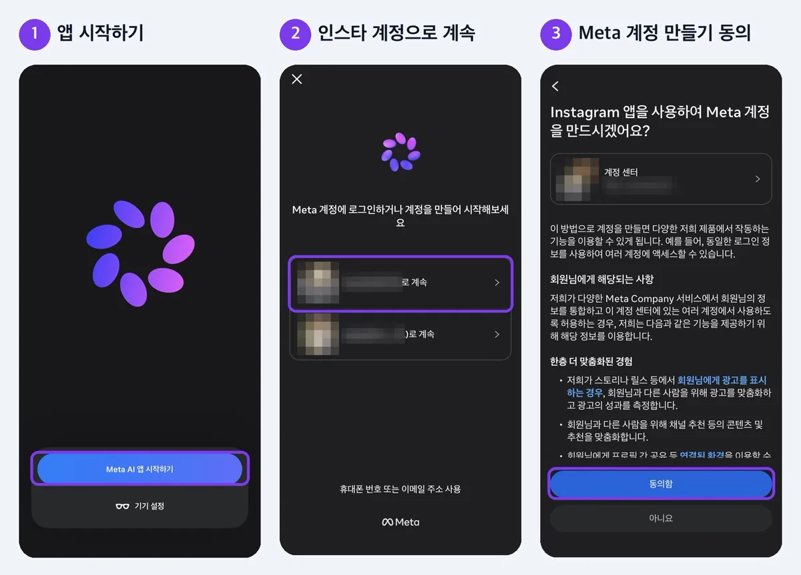
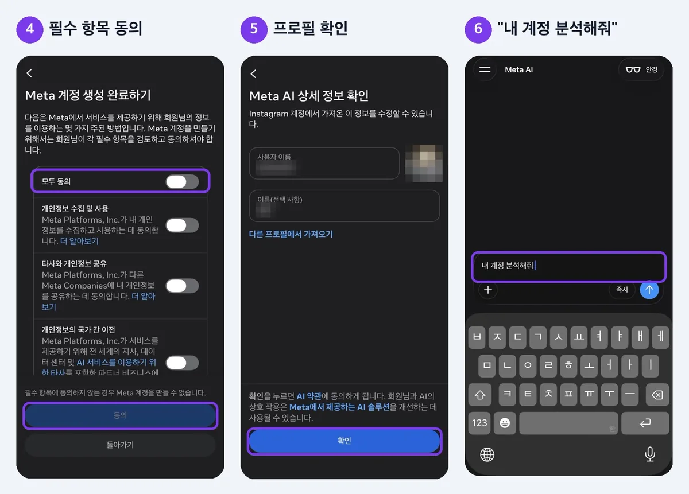
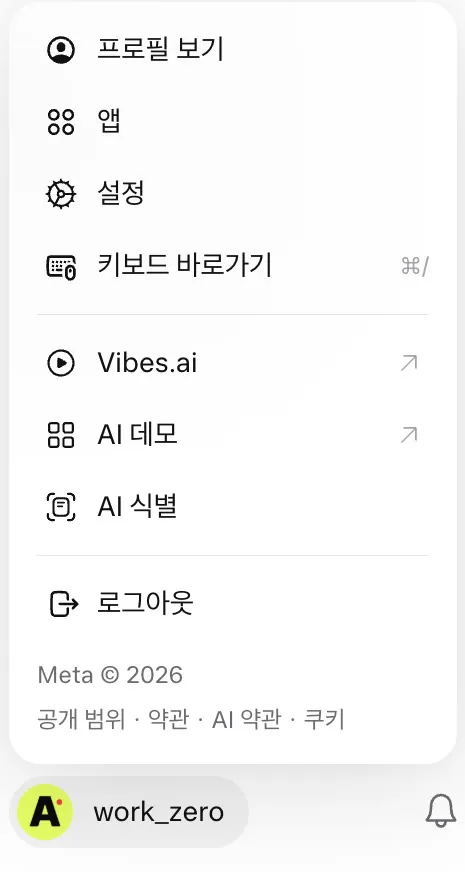
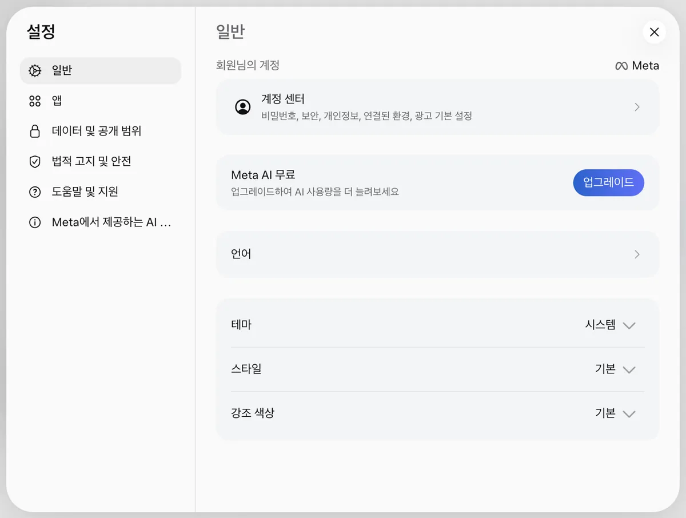
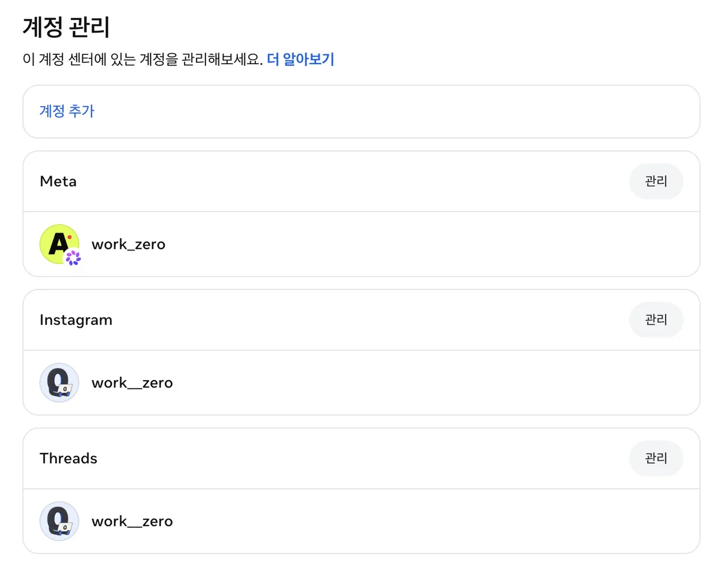
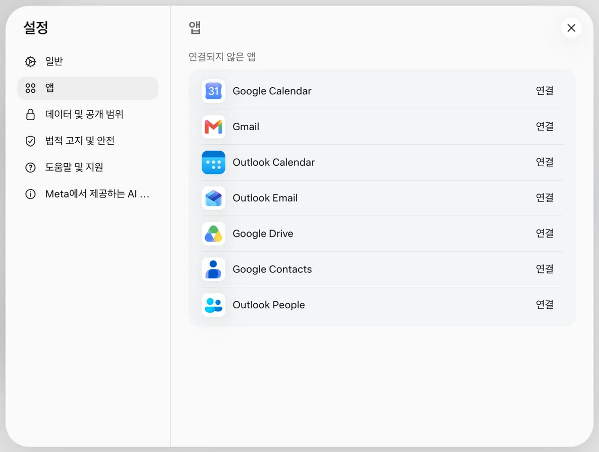
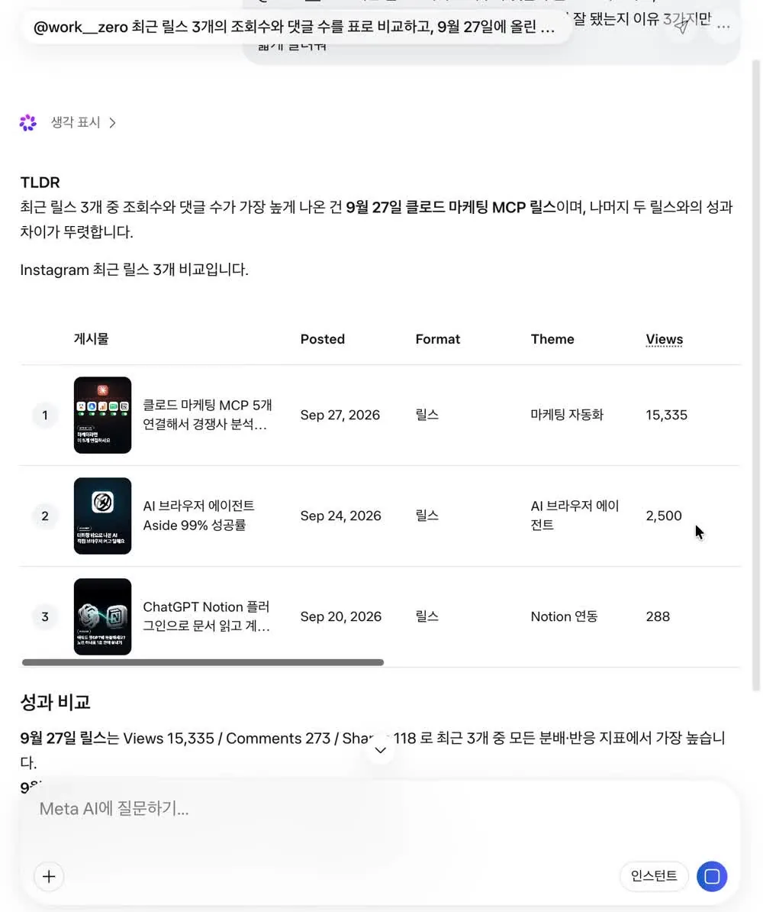
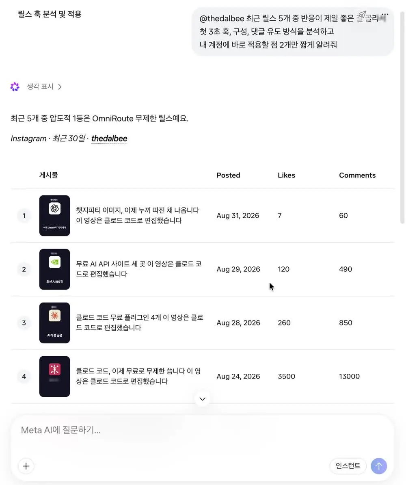
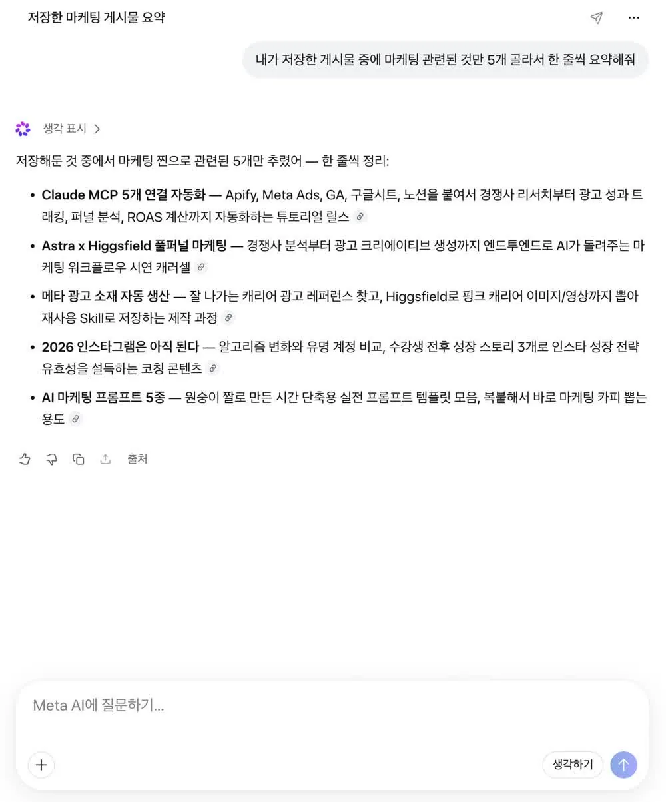
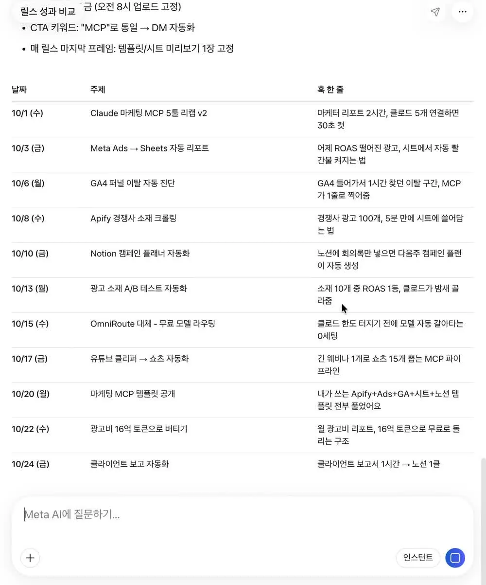

마케터용 Meta AI 인스타 분석
바쁜 분들을 위한 요약
- ChatGPT·Claude는 기본 상태로는 내 인스타 데이터를 못 읽어요. Meta AI는 인스타 계정으로 가입하면 바로 읽어요.
- 연결은 인스타 계정으로 Meta AI 앱 다운로드 후 가입 → "내 계정 분석해줘" 한 문장이면 끝나요.
- 이 페이지의 프롬프트 12개를 복사해서 내 릴스 진단, 경쟁 계정 분석, 다음 달 캘린더, 저장 게시물 정리까지 해보세요.
| 하고 싶은 것 | 섹션 | 걸리는 시간 |
|---|---|---|
| Meta AI에 인스타 연결 | 2. 연결 방법 | 3분 |
| 내 릴스가 왜 잘됐는지 | 3-1 | 1분 |
| 경쟁 계정 훅·댓글 유도 분석 | 3-2 | 1분 |
| 다음 달 콘텐츠 캘린더 | 3-3 | 1분 |
| 저장해둔 게시물 정리 | 3-4 | 1분 |
1. 왜 Meta AI인가요?
인스타 데이터는 Meta 안에 있어요. 그래서 Meta의 AI가 가장 적은 설정으로 읽을 수 있어요.
| 도구 | 기본 상태에서 내 인스타 데이터 | 읽게 하려면 |
|---|---|---|
| ChatGPT | 못 읽어요 | MCP·커넥터(예: Apify MCP)를 따로 연결 |
| Claude | 못 읽어요 | MCP·커넥터를 따로 연결 |
| Meta AI | 읽어요 | 인스타 계정으로 가입(아래 2번) |
더 깊게 가고 싶다면: 여러 계정을 대량으로 수집해서 시트로 쌓는 건 Apify MCP 같은 도구가 더 맞아요.
2. 연결 방법 (3분)
프로페셔널 계정(비즈니스·크리에이터)을 권장해요. 분석을 요청하면 "Meta 비즈니스 관리자 [베타]" 권한으로 데이터를 읽는데, 개인 계정에서는 분석 결과가 끝까지 나오지 않을 수 있어요. 인스타 앱 → 설정 → 계정 유형 및 도구에서 무료로 바꿀 수 있어요.
폰에서 처음 연결하기
Meta AI 앱을 설치하고 아래 순서대로 누르면 돼요. 보라색 표시가 누를 곳이에요.

- Meta AI 앱 시작하기를 눌러요.
- 폰에 로그인된 인스타 계정이 뜨면 분석할 계정으로 계속을 눌러요.
- "Instagram 앱을 사용하여 Meta 계정을 만드시겠어요?"에서 동의함을 눌러요. 이 순간 인스타 계정과 Meta AI가 같은 계정 센터로 묶여요.

- 필수 항목(개인정보 수집·사용 등)을 읽고 동의해요. 동의하지 않으면 Meta 계정을 만들 수 없어요.
- 인스타에서 가져온 사용자 이름·사진을 확인하고 확인을 눌러요.
- 채팅창에
내 계정 분석해줘라고 보내요.
- 답변 안에 Meta 비즈니스 관리자 [베타] 카드가 "활성화됨"으로 뜨면 연결 완료예요. 이어서 "연결 계정 확인 중 → 계정 분석"이 진행돼요.
PC에서 쓰기 (meta.ai)
PC에서는 meta.ai에 접속해서 앱과 같은 계정으로 로그인하면 돼요. 연결된 인스타 계정은 계정 센터에 묶여 있어서 웹에서도 그대로 쓰여요.
- 표나 긴 답변은 넓은 화면이 보기 편해서, 분석 결과 정리는 웹을 추천해요.
- 아래 3번 프롬프트를 복사해서 붙여 넣기도 웹이 더 쉬워요.
- 앱 설치: App Store에서 Meta AI · Android는 Google Play에서 "Meta AI" 검색
이미 Meta AI를 쓰고 있다면
인스타로 가입하지 않았다면 계정 센터에서 인스타 계정을 추가하면 돼요.
- 앱: 왼쪽 위 메뉴 → 설정 → 계정 센터 → 계정 관리 → 계정 추가
- 웹(meta.ai): 왼쪽 아래 프로필 → 설정 → 일반 → 계정 센터 → 계정 관리 → 계정 추가



여기서 헤매지 마세요: 설정의 "앱" 메뉴는 Gmail·구글 캘린더·Outlook 같은 앱을 연결하는 곳이에요. 인스타는 여기 없어요. 인스타는 계정 센터에서 연결해요.

연결을 끄거나 해제하려면
- 분석 권한만 끄기: 채팅의 "Meta 비즈니스 관리자 [베타]" 카드를 다시 누르면 Meta AI의 액세스가 꺼져요.
- 계정 연결 해제: 계정 센터 → 계정 관리 → 해제할 계정 옆 관리 → 이 계정 센터 외부로 이동 → 계정 이동.
메뉴 이름은 사용자마다 조금 다를 수 있어요. Meta가 "계정 센터"를 "Meta 계정"으로 바꾸는 중이라, "Meta 계정"으로 보이면 같은 곳이에요.
3. 바로 쓰는 프롬프트 12개
@내계정, @경쟁계정 자리만 바꿔서 그대로 복사하세요. 답이 길면 끝에 "짧게"를 붙이면 돼요.
3-1. 내 릴스가 왜 잘됐는지
실제로 이렇게 답해줬어요. 최근 릴스 3개를 표로 비교하고, 9/27 릴스(조회 15,335)가 잘된 이유를 짚었어요.

@내계정 최근 릴스 3개의 조회수와 댓글 수를 표로 비교하고,
가장 잘된 릴스가 왜 잘됐는지 이유 3가지만 짧게 알려줘@내계정 최근 30일 게시물 중 반응(조회·댓글·공유)이 가장 좋은 3개와
가장 낮은 3개를 표로 비교하고, 차이를 만든 요소 3가지만 알려줘@내계정 최근 릴스 5개의 첫 문장(훅)만 모아서 표로 정리하고,
반응이 좋았던 훅의 공통점과 다음 릴스에 쓸 훅 5개를 제안해줘3-2. 경쟁 계정 해부
공개 계정이면 남의 계정도 분석해줘요. 아래는 @thedalbee 최근 릴스 5개를 비교한 실제 답변이에요.

@경쟁계정 최근 릴스 5개 중 반응이 제일 좋은 걸 골라서
첫 3초 훅, 구성, 댓글 유도 방식을 분석하고
내 계정에 바로 적용할 점 2개만 짧게 알려줘@경쟁계정 과 @내계정 의 최근 릴스 5개씩 댓글 수를 표로 비교하고,
격차가 생긴 이유 2가지와 내가 바로 따라 할 수 있는 것 1가지를 알려줘@경쟁계정 에서 반응 좋은 릴스 3개의 댓글 유도 문구(CTA)만 뽑아서 표로 정리하고,
내 주제에 맞게 바꾼 CTA 3개를 만들어줘3-3. 다음 달 콘텐츠 캘린더
지금까지 분석한 걸 바탕으로 @내계정 다음 달 콘텐츠 캘린더를 짜줘.
타깃은 마케터, 주 3회, 날짜·요일·주제·훅 한 줄을 표로.
날짜와 요일은 실제 달력 기준으로 한 번 더 확인해줘@내계정 이번 주에 올릴 릴스 3개 기획안을 만들어줘.
각각 훅 한 줄, 구성 3단계, 댓글 유도 문구를 표로@내계정 게시물을 주제별로 묶어서 반응이 좋은 주제 3개를 찾고,
다음 달 캘린더를 그 3개 주제가 골고루 나오게 짜줘3-4. 저장해둔 게시물 정리

내가 저장한 게시물 중에 마케팅 관련된 것만 5개 골라서 한 줄씩 요약해줘내가 저장한 게시물을 주제별로 묶어서 표로 정리해줘 (주제, 개수, 대표 게시물 1개)내가 저장한 게시물 중 내 다음 콘텐츠 아이디어로 쓸 만한 것 3개를 골라서
@내계정 에 맞는 제목으로 바꿔줘4. 쓰기 전에 알아둘 점
직접 써보면서 확인한 것들이에요.
- 날짜·요일은 꼭 다시 보세요. 캘린더를 짜달라고 했을 때 10월 1일(목요일)을 수요일로 적었어요. 그래서 3-3 프롬프트에 "실제 달력 기준으로 확인" 문장을 넣어뒀어요.

- 숫자는 인사이트와 한 번 대조하세요. 경쟁 계정 댓글 수를 13,000처럼 어림값으로 보여준 적이 있어요(실제 12,826). 보고서에 넣을 숫자는 인스타 인사이트에서 확인하세요.
- 개인 계정은 결과가 안 나올 수 있어요. 프로페셔널 계정으로 바꾸고 다시 요청해보세요.
- 읽고 분석하는 용도예요. 제가 써본 범위에서는 게시물을 올리거나 고치지는 않았어요.
5. 자주 묻는 질문
돈이 드나요? 무료로 쓸 수 있어요. 설정 화면에 "Meta AI 무료 · 업그레이드하여 AI 사용량을 더 늘려보세요"라고 나와요. 많이 쓰면 사용량 제한에 걸릴 수 있어요. 내 데이터가 걱정돼요. 분석 권한은 채팅의 "Meta 비즈니스 관리자 [베타]" 카드로 언제든 끌 수 있고, 계정 연결은 계정 센터에서 해제할 수 있어요(2번 마지막 부분). "내 계정 분석해줘"를 보냈는데 카드가 안 떠요.
- 계정 센터 → 계정 관리에 인스타 계정이 있는지 확인하세요.
- 프로페셔널 계정인지 확인하세요.
- 새 채팅에서
@내계정 최근 릴스 3개 조회수 알려줘처럼 계정 이름을 넣어 다시 요청해보세요.
ChatGPT나 Claude로는 정말 안 되나요? 기본 상태로는 안 돼요. MCP나 커넥터(예: Apify MCP)를 연결하면 가능해요. 대신 설정이 필요해서, 바로 시작하려면 Meta AI가 편해요.
공식 링크
- Meta AI 앱에서 계정 센터에 계정 추가·삭제: https://www.meta.com/help/ai-glasses/988242405799386/
- 계정 센터 안내: https://www.meta.com/help/accounts-center/
- Meta 계정(계정 센터 개편) 발표: https://about.fb.com/news/2026/04/meta-account/
- Meta AI 웹: https://www.meta.ai/
- Meta AI 앱(App Store): https://apps.apple.com/kr/app/meta-ai/id1558240027
기준 날짜: 2026년 9월 29일. 메뉴 이름과 화면은 업데이트로 바뀔 수 있어요. 더 많은 마케터용 AI 자동화는 @work__zero 에서 올리고 있어요.